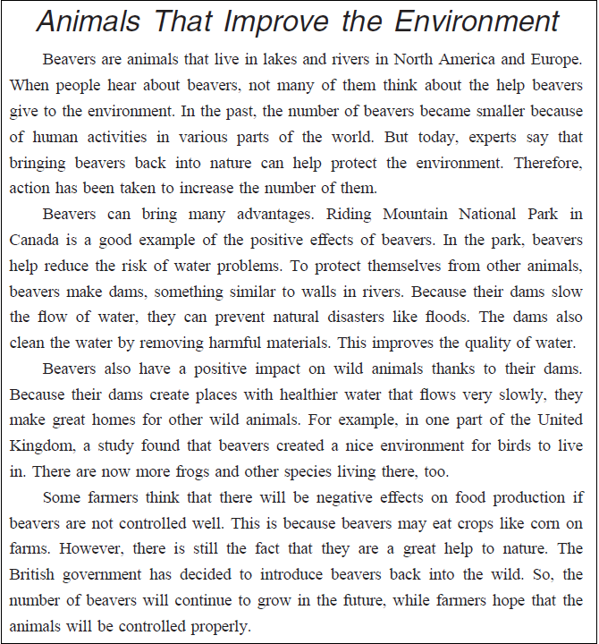

英語検定 準２級(2025年第3回No.4) 残り時間が0になると、自動的に採点します。 時間内に終了する場合は、一番下の「採点する」のボタンを押してください。 残り時間： 分 秒 3-4 英語検定(準２級) 筆記 2025年第3回(No.26～No.29) 各１０点 × ４問 ＝ ４０点満点 次の英文を読み、(26)から(29)の各質問に最も適切なものを、1～4 の中から一つ選びなさい。  問26 Question: What happened to beavers in the past? 答え： ( 26 ) (1) They were introduced to Europe from North America. (2) They decreased in many places due to human activities. (3) They had an influence on human lifestyles and activities. (4) They increased rapidly in number and harmed the environment. 問27 Question: In Riding Mountain National Park in Canada, (1) or (2) or (3) or (4) 答え： ( 27 ) (1) beavers help get rid of bad substances from the water. (2) beavers have no enemies with which they have to live. (3) beavers make dams in the water as their gathering places. (4) beavers do not influence natural disasters. 問28 Question: How do beavers have a positive impact on other wild animals? 答え： ( 28 ) (1) They help other animals hunt their food. (2) They leave food that other animals can eat. (3) They create homes suitable for other animals. (4) They clean other animals’ bodies with water. 問29 Question: Why do some people think beavers may have negative effects? 答え： ( 29 ) (1) Because some beavers fail to control the water flow using their dams. (2) Because beavers attack farm animals when they are nervous. (3) Because other animals that are attracted to beavers may harm humans. (4) Because there is a chance that beavers may eat crops on farms.

 英語検定 準２級(2025年第3回No.4)
英語検定 準２級(2025年第3回No.4)